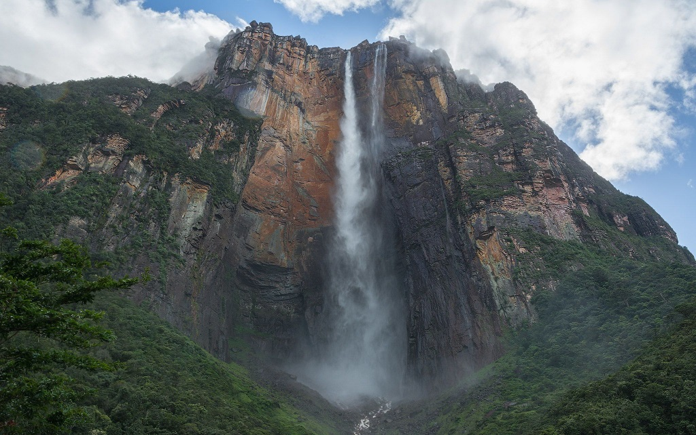
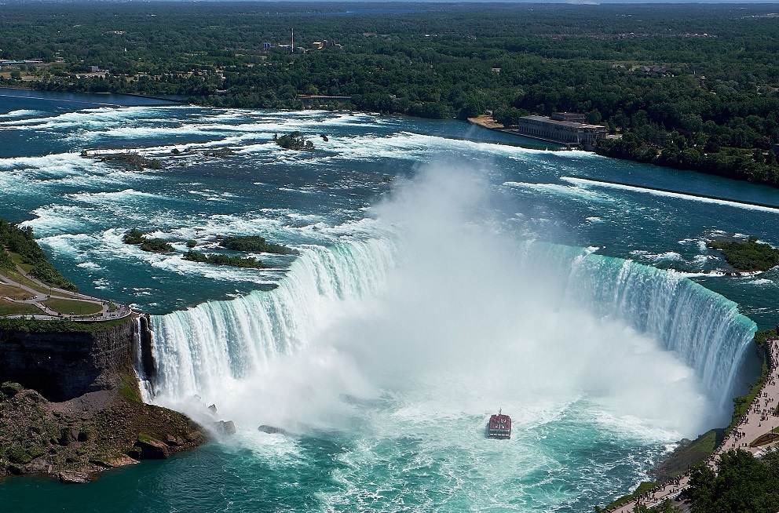
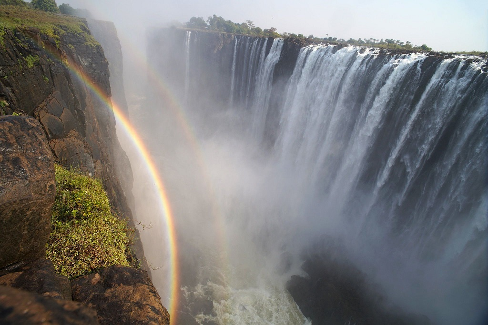

Водоспад Анхель
- - Розташування: річка Чурун, венесуельський штат Болівар
- - Висота водоспаду Анхель: 979 метрів, з них вільного падіння — 807 метрів
- - Ширина: 107 метрів
- - Обсяг води, що падає: 300 м³/с
Найвищий водоспад у світі Анхель розташований у важкодоступній місцевості Венесуели в національному парку "Канайма". Дістатися до Анхеля — ще та пригода. Можливо це лише водою або повітрям. Хоча, природно, туроператори вже покрутилися і влаштують подорож всім охочим, забезпечивши їх їжею і необхідними речами.
Водоспад знайшов ще на початку 20 століття дослідник Ернесто Санчес Ла Крус, але слава прийшла не одразу. Тільки коли американський льотчик Джеймс Ейнджел описав історію своїх пригод у венесуельській місцевості, куди він прилетів в пошуках цінних копалин, водоспад став відомим. На честь цього пілота місце і отримало назву — в іспанському прізвище Angel звучить як Анхель.
Розбитий літак Ейнджела все ще лежить не вершині гори Ауянтепуй — тепер це національний пам'ятник.
Ніагарський водоспад
- - Розташування: річка Ніагара на кордоні американського штату Нью-Йорк і канадської провінції Онтаріо
- - Висота Ніагарського водоспаду: 53 метри
- - Максимальна ширина: 793 метри
- - Обсяг води, що падає: 5700 і більше м³/с
Йдеться про цілий комплекс: водоспадах Підкова або Канадський, Фату і Американський. Утворюються вони з однойменної річки — Ніагара. Вважається, що назва походить від поселення племені ірокезів "Ongniaahra" — "роздвоєна земля", або самоназви одного з народів "Onguiaronon" — "народ вод, що гримлять".
В кінці 17 століття водоспад першим з європейців описав священик-католик Луї Енпен з Франції, хоч в оповіданнях дуже перебільшив побачене.
Тепер Ніагарський — найвідоміший водоспад Північної Америки і один з головних туристичних атракціонів США. Там є канатні дороги, оглядові майданчики, різнокольорові прожектори. До нього можна підійти, підпливти або навіть підлетіти — на повітряній кулі або вертольоті. Недарма Ніагарський водоспад обожнюють молодята з усього світу. А ще — екстремали. 2012 року перша людина, Нік Волленд, пройшов через нього канатною дорогою. А в далекому 1901-му 63-річна вчителька перша спустилася ним — в дерев'яній бочці. Зараз за таке загрожує штраф.
Водоспад Вікторія
- - Розташування: Південна Африка, річка Замбезі на кордоні Зімбабве і Замбії
- - Висота водоспаду Вікторія: 120 метрів
- - Ширина: 1800 метрів
- - Обсяг води, що падає: від 1,4 до 14 тисяч м³/с
Першим європейцем описав водоспад був британець Девід Лівінгстон. В середині 19 століття він побачив його під час подорожі через Замбезі. Лівінгстон і назвав його на честь королеви Вікторії. Втім тепер влада Зімбабве хоче позбутися слідів колоніального минулого і повернути назву "Мосі-оа-Тунья". Так задовго до Лівінгстона водоспад називали місцеві жителі, а перекладається це як "дим, що гримить".
Біля самого краю Вікторії є своєрідний басейн — Диявольський. У вересні та жовтні в цій ділянці води можна відносно безпечно скупатися. Але в середньому щороку один турист все ж гине через Диявольський басейн.
Краєвид на Вікторію приголомшливий, оскільки вся вода падає до вузької ущелини. Водночас його можна зарахувати до найбільших водоспадів світу — він єдиний, шириною понад кілометр і заввишки понад сто метрів.
